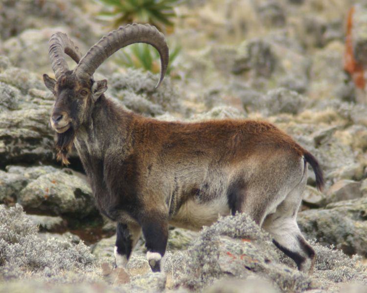

Walia Ibex the Ethiopia
Walia ibex is an endangered species of ibex that can be found only in the mountains of Ethiopia. These animals have a chocolate-brown to chestnut-brown coat coloration, a greyish-brown muzzle, and a lighter grey in the eyes and legs. The belly and insides of the legs are white in color, and black and white patterns stretch upon the legs of these animals. The males have very large horns that curve backward, reaching lengths up to 110 cm (43 in). These horns are used for dominance disputes between males. The males also have distinguished black beards. Females also have horns, but they are shorter and thinner. Females are smaller and lighter in color. The horns on both males and females are rigid.